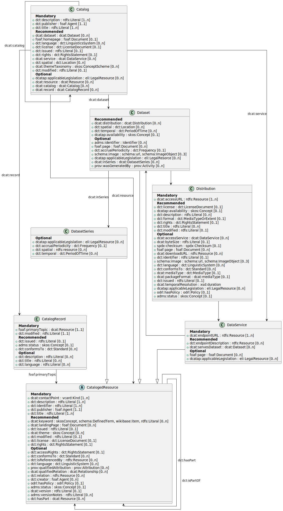

This is an initial draft. All contents of this page are subject to change.
The DCAT Application Profile for Data Portals in Switzerland (DCAT-AP CH) serves as an application profile of the Data Catalog Vocabulary [[VOCAB-DCAT]] and is utilized to detail the datasets, data services and dataset series featured in swiss data portals, such as the open data portal opendata.swiss and the interoperability platform i14y.ch.
It primarily addresses the operators of these data portals (termed 'data receivers' in DCAT language) and the data providers who curate the data catalogues (known as 'data senders' in DCAT language).
As a rule, data portals do not provide the data itself, but only metadata about the data.
This is intended to facilitate the discovery and reuse of the data. DCAT-AP CH therefore focuses primarily on the description of metadata.
DCAT-AP CH aims to maintain compatibility with the Application Profile for Data Portals in Europe [[DCAT-AP]].
However, due to the ongoing evolution of the DCAT-AP standard, compatibility with the existing version of DCAT-AP CH is not assured.
The current version 3.0.0 of the standard has been developed by the eCH Open Government Data Expert Group for this purpose.
Introduction
Document status
In progress: Use is only authorised within the specialist group or expert committee.
Draft: The document was released for public consultation by the responsible speakers from the expert committee and published accordingly.
Proposal: The document is submitted to the Committee of Experts for approval DD-MM-YYYY, but is not yet standardised.
Approved: The document has been approved by the Expert Committee. It has normative force for the defined scope in the defined area of validity.
Replaced: The document has been replaced by a new, more up-to-date version. It can still be used, but it is recommended that you use the newer version.
Cancelled: The document has been withdrawn by eCH. It may no longer be used.
Suspended: The document has been withdrawn by eCH. It may not be used. It has not reached the ‘Approved’ status.
DCAT (Data Catalog Vocabulary) is a semantic definition for describing data using an RDF vocabulary.
It allows a decentralized approach to data publication by enforcing interoperability
through the use of a common language to describe data.
As DCAT is a generic language, it can be used in different contexts.
An application profile specifies its use within a specific domain, context or application,
with the aim of facilitating data exchange. In Europe, the DCAT-AP application profile has been defined,
and has taken on the role of a de facto standard within Europe. Many European countries defined their own localised application profile based on
DCAT-AP, tailored to their specific needs.
The Swiss community defined DCAT-AP CH to provide guidance to Swiss data publishers on how to specify their data
catalogues and to data portal managers on how to process data cataloges in a DCAT-AP CH and DCAT-AP compliant manner,
thus ensuring interoperability with DCAT-AP.
It should always be kept in mind that both DCAT-AP CH and DCAT-AP focus primarily on metadata.
Metadata is, by definition, secondary information about the data: when and by whom it was published,
what the terms of use are, how often it is updated, who to contact about it and where
and how it can be accessed.
Overview of changes compared to version 2.0.0
DCAT-AP CH: Building Blocks
DCAT as a universal vocabulary
The application profile specified in this document is based on the Data Catalog Vocabulary (DCAT) specifications
developed under the responsibility of the Government Linked Data Working Group at the W3C. DCAT is an RDF vocabulary
designed to facilitate interoperability between data catalogues published on the Web. Additional
classes and properties from other well-known vocabularies are reused where approriate.
The DCAT vocabulary consists of classes and properties.
Classes are things on the internet: Not all of them have URIs, but it is recommended to provide a URI for them.
They are complex things like a person, an organisation, a dataset, a website or a downloadable data file.
Classes have properties: Properties are the attributes that describe these things. Some properties are common
to more than one class, for example a title is a common attribute. Other properties are very specialised, such
as a file format, which only makes sense for a data file.
Properties can be simple or complex: Some properties are classes. For example, an organisation might have a website. Or a dataset may have a data publisher. In general, a class can be recognized by its spelling: A property name starts with a lowercase letter, such as dcat:dataset, while a class starts with an uppercase letter, such as dcat:Dataset.
Classes and properties are used to provide metadata in a structured way.
The core structure of DCAT-AP CH v3 replicates the core structure of DCAT-AP
Being a subprofile of DCAT-AP, DCAT-AP CH replicates its core structure and concepts.
Classes
The Swiss Application Profile (DCAT-AP CH) as well as the European Application Profile (DCAT-AP)
are structured around the following 7 main classes:
Note that in the previous versions of DCAT-AP and DCAT-AP CH, classes were categorised to be mandatory,
recommended and optional, like it’s currently the case for properties. This categorisation has been removed
in favour of the above overview and guidelines to create a common expectation for DCAT-AP cataloges.
To improve the coherency by the description of shared Dataset, Distribution and the new introduced class Data Services,
DCAT-AP provided guidelines on their usage:
[[DCAT-AP-USAGEGUIDE]].
Overview of the DCAT-AP CH model, showing the classes with their properties and the relationships between them
Requirement levels
DCAT-AP CH defines four requirement levels for data receivers and senders:
Mandatory: a receiver MUST be able to process the information for that property;
a sender MUST provide the information for that property.
Recommended: a receiver MUST be able to process the information for that property;
a sender SHOULD provide the information for that property if it is available.
Optional: a receiver MUST be able to process the information for that property;
a sender MAY provide the information for that property but is not obliged to do so.
Deprecated: a receiver SHOULD be able to process information about instances
of that property; a sender SHOULD NOT provide the information about instances of that property.
The meaning of the terms MUST, MUST NOT, SHOULD and MAY in this section and in the following sections are as
defined in RFC 2119.
In the given context, the term "processing" means that receivers MUST accept incoming data and transparently
provide these data to applications and services. It does neither imply nor prescribe what applications and
services finally do with the data (parse, convert, store, make searchable, display to users, etc.).
Controlled vocabularies of DCAT-AP CH v3
The table below lists a number of properties with the controlled vocabularies (CVs) that MUST be used for
the properties listed.
Where possible, the same controlled vocabularies have been used as for DCAT-AP.
However, not every vocabulary proposed by DCAT-AP is currently used for DCAT-AP CH v3.
In some cases, the eCH Expert Group is still evaluating the application of the proposed vocabulary,
while in other cases the eCH Expert Group has decided to evaluate the introduction of a new, Swiss-specific vocabulary.
In particular, for the property dct:publisher, which refers to an entity (organisation) responsible for making
a cataloge, a dataset or a data service available, a CV is still being discussed within the eCH Expert
Group Open Government Data - its introduction will be evaluated for the next iterations of
this standard eCH-0200.
The evaluation of the Controlled Vocabularies is carried out by a subgroup of the eCH OGD Expert Group.
It defines the usage notes for the use of the respective CVs and provides an aid (eCH-0285-Use-of-controlled-vocabularies) with recommendations and best practices for the use of CVs.
Further information can be found here: eCH-0285-Use-of-controlled-vocabularies
The values to be used for this property are the URIs of the concepts in the vocabulary.
A possible (non-normative) “mapping” to the current themes on opendata.swiss is proposed here:
[[VOCAB-CH-THEME]]
The value to be used for this property is the URI of the vocabulary itself, i.e.
the concept scheme, not the URIs of the concepts in the vocabulary.
Multilingualism
Switzerland is a multilingual country. Therefore, supporting multiple languages is particularly
important. For this reason, DCAT-AP CH defines guidelines regarding the content and the technical
publication of this content in different languages.
In terms of content:
Organisations at the federal level MUST provide metadata in at least
2 official languages , for instance German and French or Italian and German.
Every other organisation MUST provide this metadata in at least one of the following four
languages: English, German, French or Italian. The specification in other languages is optional.
From a technical perspective multilingualism SHOULD be handled as follows:
Multilingual literals: Properties of Range rdfs:Literal can be provided in
multiple languages by adding so called language encoded strings: these add the language as an
[[ISO 639-1]] two letter code after the string in the way that is shown in the example below:
Content negotiation: Properties of Range rdfs:Resource SHOULD be URIs.
It is important to use URIs that are language independent. Then the data publisher
in the process of dispatching these URIs can use content negotiation.
The table lists multilingual properties of DCAT-AP CH and the translation strategies that apply to them:
Content negotiation for the URI and language encoded string for the name
DCAT-AP-CH: Properties per Class
Notation
Property: denotes the Property that the class or property is given in DCAT-AP and/or
DCAT-AP CH.
URI: denotes the property URI.
Range: specifies the range of values that is expected for the property.
ReqLevel (Requirement level): denotes whether the class / property is mandatory, recommended or optional.
Card (Cardinality): specifies the minimum number of values that MUST be provided for that
property and the maximum number of values that MAY be provided.
Usage Note: specifies custom usage instructions and provides background information.
CV (Controlled Vocabulary): defines which controlled vocabulary SHOULD be used.
Class: Catalog
A Catalogue or repository that hosts the Datasets or Data Services being described.
DCAT-AP CH allows Catalogues of only Datasets, but also Catalogues of only Data Services,
but usually it will be a mixture of both.
This property links the Catalogue with a Dataset that is part of the Catalogue.
As empty Catalogues are usually indications of problems, this property SHOULD be combined
with the property service to implement an empty Catalogue check.
This property refers to a site or end-point (Data Service) that is listed in the Catalogue.
As empty Catalogues are usually indications of problems, this property SHOULD be combined
with the property Dataset to implement an empty Catalogue check.
This property refers to a geographical area covered by the Catalog.
Usage Note
This property may be indicated using an IRI reference or may be encoded as an instance of dct:Location.
CV to be used for IRI reference: LINDAS resources SHOULD be used. Whenever a particular location is not available as LINDAS resource, then the EU Vocabularies Named Authority Lists MAY be used:
[[VOCAB-EU-CONTINENT]],
[[VOCAB-EU-COUNTRY]],
[[VOCAB-EU-PLACE]],
if the location is not in one of the mentioned EU Vocabularies, then Geonames URIs MAY be used:
[[GEONAMES]].
A record describing the registration of a single resource (e.g., a dataset, a data service) that is part of the catalog.
Class: Cataloged Resource
Resource published or curated by a single agent.
Usage Note
The class of all cataloged resources, the super-class of , , and any other member of a dcat:Catalog. This class carries properties common to all cataloged resources, including datasets and data services
This class Catalogued Resource is an abstract class for DCAT-AP CH. Therefore only subclasses should be used in a data exchange.
This property contains a free-text account of the Dataset.
This property can be repeated for parallel language versions of the
description (see ). On the user interface of
data portals, the content of the element whose language corresponds to the
display language selected by the user is displayed.
This property contains a keyword or tag describing the resource.
Usage Note
Keywords primarily serve to support search functionality on Data Catalogs. Using more keywords is preferable to using fewer. Keywords should be chosen from the perspective of the searcher. Consider, that keywords which are obvious for you as a publisher might be useful for the search. E.g. add environmental monitoring (http://www.wikidata.org/entity/Q1749732) if you as a data publisher are an Environmental Monitoring Agency.
Both controlled vocabularies and literals are allowed, but controlled vocabularies SHOULD be used.
Use the following priority cascade for adding Keywords:
This property contains the most recent date on which the Dataset was changed or modified.
Usage Note
No value may indicate that the Dataset has never changed after its initial publication,
or that the date of the last modification is not known, or that the
Dataset is continuously updated
This property MUST only be set if the distributions (the actual data) that
the Dataset describes have been updated after it has been issued. In this case the property
MUST contain the date of the last update. That way a person or institution using the data
for an analysis or application will know when to update the report or application on their side.
This property refers to an implementing rule or other specification.
This property SHOULD be used to indicate the model, schema, ontology, view or profile
that this representation of a Dataset conforms to. This is (generally) a complementary concern
to the media-type or format.
This property refers to a related resource where the relationship cannot be further specified as a
dcat:qualifiedRelationship. This may be additional material such as an article, example or
documentation helpful in the context of the Dataset.
The element can also be used to link to legal foundations that apply to the publication or usage
of the Dataset.
The previous resource (before the current one) in an ordered collection or series of resources.
Usage Note
In DCAT this property is used for resources belonging to a .
Important: It does not denote a previous version of the same resource, but a distinct resource immediately preceding the current one in an ordered collection of resources.
A record in a catalog, describing the registration of a single
Usage Note
This class is optional and not all catalogs will use it. It exists for catalogs where a distinction is made between metadata about a dataset or service and metadata about the entry in the catalog about the dataset or service.
A link to the Dataset, Data Service, Dataset Series or Catalog described in the record.
Usage Note
A catalogue record will refer to one entity in a catalogue. This can be either a Dataset, a Data Service, a Dataset Series or a Catalog. To ensure an unambigous reading of the cardinality the range is set to . However it is not the intend with this range to require the explicit use of the class Catalogued Resource. As abstract class, an subclass should be used.
foaf:primaryTopic is functional: each catalog record can have at most one primary topic, i.e., describes one cataloged resource.
This property refers to a language of the Catalog Record.
This property can be repeated if there are multiple languages in the Catalog Record.
CV to be used: [[VOCAB-EU-LANGUAGE]]
Class: Dataset
A Dataset is a collection of data, published or curated by a single source and related by a common
idea or concept. In contrast to a Data Service a Dataset is expected to be a collection of data that is
available for access or download in one or more formats, as Distributions. Distributions belonging to
the same Dataset should not differ in regards to the idea of the data that they represent. They may differ
in regards to the physical representation of the data such as format or resolution. Or they may split the
data of the dataset into portions of comparable size such as data per time period or location.
DCAT-AP provides guidelines about the usage of Data services and Distribution in relation to Datasets:
[[DCAT-AP-USAGEGUIDE]].
This property links the Dataset to an available Distribution.
In exceptional cases, a Dataset for which no distribution form exists (yet) can
be described in the Catalogue. In this case, the element dcat:distribution may be omitted.
This property refers to a geographic region that is covered by the Dataset.
Usage Note
This property may be indicated using an IRI reference or may be encoded as an instance of dct:Location.
CV to be used for IRI reference: LINDAS resources SHOULD be used. Whenever a particular location is not available as LINDAS resource, then the EU Vocabularies Named Authority Lists MAY be used:
[[VOCAB-EU-CONTINENT]],
[[VOCAB-EU-COUNTRY]],
[[VOCAB-EU-PLACE]],
if the location is not in one of the mentioned EU Vocabularies, then Geonames URIs MAY be used:
[[GEONAMES]].
This property allows for more detailed information about the identifer, including the identifier scheme, version, and the agency managing the scheme. This is useful when datasets are
referenced across different systems or organizations, ensuring clarity and consistency.
Examples are MASTADS [[MASTADS]], DOI [[DOI]], EZID [[EZID]], W3ID [[W3ID]], DataCite [[DataCite]] or other subject-specific identifiers.
A thumbnail picture illustrating the content of the dataset.
Usage Note
A thumbnail picture illustrating the content of the Dataset.
For distributions that consist of visual content (photographs, videos, maps, etc.)
it makes sense to add a limited number of thumbnails to the metadata.
It’s a DCAT-AP CH Custom Class (not present in DCAT-AP)
The legislation that mandates the creation or management of the Dataset.
Usage Note
The use of an ELI identifier is recommended. The FedLex identifier should be used for the federal level. If there is no ELI or FedLex identifier, then the dct:relation property (see ) must be used to indicate the legal basis.
An activity that generated, or provides the business context for, the creation of the dataset.
Usage note
The activity associated with generation of a dataset will typically be an initiative, project, mission, survey, on-going activity ("business as usual") etc. Multiple prov:wasGeneratedBy properties can be used to indicate the dataset production context at various levels of granularity.
Class: Distribution
A metadata entry of this class describes a distribution of the data, which is a specific representation
of a Dataset. A Dataset might be available in multiple serializations that may differ in various ways,
including natural language, media-type or format, schematic organization, temporal and spatial resolution,
level of detail or profiles (which might specify any or all of the above).
The distribution can contain all the data of the Dataset or it can contain just a part of the data.
For example: it can contain all data about the population in Switzerland or it can contain just one year of
this data, say the year 2018. It can also contain the data in an alternative data format, for example a
graphical presentation of the data for the years 1990 up to 2010.
DCAT-AP allows the representation of various relationships within Dataset or between Datasets: The simplest
relationship is the aggregation of various physical representations of data (“Distributions”) into a Dataset.
One possible such Dataset would be a time series where each distribution covers one year of the data and the
Dataset spans several years.
A distribution represents a general availability of a Dataset. It implies
no information about the actual access method of the data, i.e. whether by direct download or
through a Web page. The use of dcat:downloadURL property indicates directly downloadable distributions.
DCAT-AP provides guidelines about the usage of Data services and Distribution in relation to Dataset:
[[DCAT-AP-USAGEGUIDE]].
This property contains a URL that gives access to a Distribution of the Dataset. The resource at
the access URL may contain information about how to get the Dataset.
This property refers to the file format of the Distribution.
CV to be used: [[VOCAB-EU-FILE-TYPE]]
If a format is not available:
a) media type ([[IANA-MEDIA-TYPES]]) should be used
b) If necessary, a discussion to evaluate the adoption within the EU should be
launched (Contact point: [[VOCAB-EU-OP-CONTACT]]).
This property contains a name given to the Distribution. This property can be repeated for
parallel language versions of the description
(see ).
The title MUST be given if the distribution contains only part of the data offered by the Dataset
The title can be given in several languages. In multilingual data portals, the title in the
language selected by a user will usually be shown as title for the distribution.
Deprecated since DCAT-AP CH v3.0.0, see requirements for deprecated properties
If a dataset contains distributions that differ regarding their content beyond just differences
in format or resolution this property can be used to specify temporal or spatial coverage of the
data that the distribution contains.
It’s a DCAT-AP CH Custom Class (not present in DCAT-AP).
In case of a downloadable file, it is good practice to repeat the mandatory accessURL
in this more specific property, to indicate to the data user that the distribution has this
extra characteristic of being downloadable. The downloadURLs MAY thus be the same as the
accessURLs but they MAY also differ.
A thumbnail picture illustrating the content of the Distribution.
For distributions that consist of visual content (photographs, videos, maps, etc.) it makes
sense to add a limited number of thumbnails to the metadata.
It’s a DCAT-AP CH Custom Class (not present in [[DCAT-AP]]).
This property refers to a language used in the Distribution.
This property can be repeated if the metadata is provided in multiple languages.
The property MUST be set if the distribution is language-dependent, or if it is given in
some of the languages German, French, Italian and English but not in all four languages.
This property refers to the format of the file in which one or more data files are
grouped together, e.g. to enable a set of related files to be downloaded together.
It SHOULD be expressed using a media type as defined in the official register of media types managed by IANA.
A Data Service is a collection of operations that provides access to one or more Datasets or data
processing functions. If a dcat:DataService is bound to one or more specified Datasets, they are
indicated by the dcat:servesDataset property.
DCAT-AP provides guidelines about the usage of Data services and Distribution in relation to
Datasets:
[[DCAT-AP-USAGEGUIDE]].
This property contains a description of the services available via the end-points,
including their operations, parameters etc.The property gives specific details of the actual
endpoint instances.
A collection of datasets that are published separately, but share some characteristics that group them.
It is recommended to avoid Dataset Series without a dataset in the collection.
Therefore at least one Dataset should refer to a Dataset Series using the property in series (dcat:inSeries).
The frequency at which the Dataset Series is updated. The frequency of a Dataset Series is not equal to the frequency of the dataset in the collection.
This property refers to a geographical region that is covered by the Dataset Series.
Usage Note
When spatial coverage is a dimension in the dataset series then the spatial coverage of each dataset in the collection should be part of the spatial coverage. In that case, an open ended value is recommended, e.g. CH or a broad bounding box covering the expected values.
This property may be indicated using an IRI reference or may be encoded as an instance of dct:Location.
CV to be used for IRI reference: LINDAS resources SHOULD be used. Whenever a particular location is not available as LINDAS resource, then the EU Vocabularies Named Authority Lists MAY be used:
[[VOCAB-EU-CONTINENT]],
[[VOCAB-EU-COUNTRY]],
[[VOCAB-EU-PLACE]],
if the location is not in one of the mentioned EU Vocabularies, then Geonames URIs MAY be used:
[[GEONAMES]].
When temporal coverage is a dimension in the dataset series then the temporal coverage of each dataset in the collection should be part of the temporal coverage. In that case, an open ended value is recommended, e.g. after 2012.
Conformance to DCAT-AP
DCAT-AP CH is a Subprofile of DCAT-AP and DCAT-AP is an application profile of DCAT.
The DCAT-Profile Guidance states that application profiles may form hierarchies.
There is a close collaboration between DCAT-AP and DCAT-AP CH which takes place mostly as an
online discussion on GitHub at [[DCAT-AP-GITHUB-ISSUES]].
The following diagram captures the relationship between DCAT, DCAT-AP and DCAT-AP CH:
classDiagram
DCAT --> DCAT_AP: is_profile_of
DCAT_AP --> DCAT_AP_CH: is_subprofile_of
DCAT --> DCAT_AP_CH: is_profile_of
class DCAT {
- defines classes
- defines properties
- base vocabulary
}
class DCAT_AP {
- uses classes of DCAT
- specifies requirement levels
- specifies controlled vocabulary
}
class DCAT_AP_CH {
- localizes DCAT-AP for Swiss context
- can restrict more but not less than DCAT-AP
}
For the previously mentioned interoperability reasons, DCAT-AP CH aims to stay a sub-profile of [[DCAT-AP]].
Furthermore, this way it can be assured that metadata structured as DCAT-AP CH can be efficiently
harvested by [[DATAPORTAL-EU]].
DCAT-AP CH also aims for completeness, in the way that a data provider that only uses DCAT-AP CH
as guidance should be able to form a data catalogue that automatically conforms to DCAT-AP.
Therefore:
DCAT-AP CH contains all core classes currently known to be in DCAT-AP (Version 2.1.0, Chapter 3)
DCAT-AP CH contains all currently known recommended and mandatory properties of DCAT-AP (Version 2.0.1).
For these mentioned properties the usage conditions of DCAT-AP CH apply.
Properties of DCAT-AP or DCAT that are not mentioned in DCAT-AP CH are considered to be optional. For
these properties the usage conditions of DCAT-AP and DCAT apply in the following order: if the property
is part of DCAT-AP, DCAT-AP’s usage conditions apply, if it is a property of DCAT only,
then DCAT’s usage conditions apply.
Custom properties in DCAT-AP CH
DCAT-AP CH MAY introduce Swiss specific properties and vocabulary, such as the list of cantons of Switzerland,
which don't exist in the DCAT or DCAT-AP vocabulary. It SHOULD however not introduce its own (custom) properties
that can already be expressed in DCAT with different vocabularies. In those cases, the
DCAT-AP or DCAT vocabulary have to be used.
Therefore, some properties that were custom in Version 1 have been removed in Version 2 of DCAT-AP CH:
dct:coverage on dcat:Dataset can be now be expressed by dct:temporal and dct:spatial
rdfs:seeAlso on dcat:Dataset can now be expressed by dcat:qualifiedRelation
DCAT-AP CH still defines custom properties where a replacement by DCAT-AP or DCAT vocabulary is currently
not considered possible or useful (in DCAT-AP Version 2.1.0):
schema:image on dcat:Dataset and dcat:Distribution: this property is used to provide
thumbnails for Distributions that contain visual data
dct:coverage on dcat:Distribution is needed to model distributions of datasets as a series of data
Conformance to DCAT-AP CH
Data Provider requirements
A data catalogue conforms to DCAT-AP CH if:
An RDF description of the catalogue is available
All classes and properties defined in DCAT-AP CH v2 are used in a way consistent with the
semantics declared in this specification.
Properties not mentioned in this specification MAY be used if they are included in either
DCAT-AP or DCAT and their usage conforms to DCAT-AP if they are
included in DCAT-AP or to DCAT if they are only included in DCAT.
Receiver requirements
An application (data portal) conforms to DCAT-AP if:
It is able to process RDF catalogues that conform to DCAT-AP CH.
Processing means that it MUST accept incoming data and transparently provide this
data to applications and services.
Processing does not prescribe whether and how the metadata is stored internally,
displayed or made searchable.
This processing of metadata also applies to classes and properties not mentioned in DCAT-AP CH that are part of
DCAT-AP or DCAT. A DCAT-AP CH conformant receiver MUST also be able to process these classes and properties].
Exclusion of liability / notice of third-party rights
eCH standards which the eCH association make available to the user for use free of charge or which
reference eCH, have the status of recommendations only. The eCH Association is in no way liable for
decisions or actions which the user makes and/or takes on the basis of these documents. The user is
obliged to check the documents himself before using them and, if necessary, to seek advice. eCH
standards cannot and are not intended to replace technical, organisational or legal advice in specific
individual cases.
Documents, procedures, methods, products and standards referenced in eCH standards may be
protected by trademark, copyright or patent. It is the sole responsibility of the user to obtain any
necessary rights from the respective authorised persons and/or organisations.
Although the eCH association has taken all possible care to ensure that the eCH standards are
carefully prepared, no assurance or guarantee can be given that the information and documents
provided are up-to-date, complete, correct or free of errors. The content of eCH standards may be
changed at any time and without notice.
Any liability for damages incurred by the user from the use of the eCH standards is excluded to the
extent permitted by law.
Copyright
Anyone who develops eCH standards retains the intellectual property rights themselves. However,
the developer undertakes to make the intellectual property in question or his rights to the intellectual
property of others available to the respective specialist groups and the eCH association free of
charge, where possible, for unrestricted use and further development within the framework of the
association's purposes.
The standards drawn up by the specialist groups may be used, disseminated and further developed
by eCH free of charge and without restriction, provided the respective authors are named.
eCH standards are fully documented and free of restrictions under licensing and/or patent law. The
respective documentation can be obtained free of charge.
These provisions apply exclusively to the standards drawn up by eCH, but not to standards or
products of third parties to which reference is made in the eCH standards. The standards contain the
respective references to the rights of third parties.
Collaboration & Review
Changelog
General customisation
General adaptations of various sections of the standard are listed here
The section has been updated.
The editor's note on gender-neutral language has been removed, as it is not necessary in English.
Adding the three new classes Resource, Catalog Record and Dataset Series to the section
An updated UML replaces the mermaid diagram in section
Updating the section
Alignment with DCAT-AP 3
The main focus of the eCH Expert Group by the creation of DCAT-AP CH V3 was to ensure the compatibility to DCAT-AP V3.
DCAT and DCAT-AP introduced the new Dataset Series class. This class will be adopted in V3 of DCAT-AP CH.
DCAT AP 3 introduced the property dcatap:applicableLegislation. DCAT-AP CH V3 adopted this property for the classes dcat:Catalog, dcat:Dataset, dcat:Distribution, dcat:DataService and dcat:DatasetSeries.
Terminology: Updated the list of prefixes.
Class dcat:Catalog
The properties contact point, description, publisher, title, language, licence, release date, rights and update/modification date, which are now listed in the new introduced abstract class (see Issue 248), have been removed from the list of .
Introduction of the property dcat:resource because of the introduction of (see Issue 248).
Introduction of the property dcat:record because of the introduction of (see Issue 249).
Class dcat:Resource
Introduction of the new abstract class (see Issue 248).
The following properties already available in DCAT-AP CH v2 are now listed under dcat:Resource and apply to the subclasses of dcat:Resource: contact point, description, identifier, publisher, title,keyword/tag, landing page, release date, theme/category, update/modification date, rights, access rights, conforms to, is referenced by, language, qualified attribution, qualified relation, related resource, license .
The properties contact point, description, publisher, title, language, release date, rights and update/modification date, access rights, conforms to, is referenced by, qualified attribution, qualified relation, related resource, which are now listed in the new introduced abstract class (see Issue 248), have been removed from the list of .
The properties contact point, publisher, title, license, access rights, keyword/tag, landing page, which are now listed in the new introduced abstract class (see Issue 248), have been removed from the list of